#23 textThiết lập kế hoạch tần số cao - thấp . . . 9
#24 textThiết lập phân cực 9
#25 textThiết kế đường truyền . . . 10
#26 textRadio ATPC tiêu chuẩn . 10
#27 textRadio ATPC thích ứng . . 10
#28 textPhân tích nhiễu trong không khí trong 11
#29 textNhiễu trong điều kiện mưa . 12
#30 textVị trí ô mưa đơn 13
#31 textQuét ô mưa tự động . . 14
#32 textĐịnh nghĩa ô mưa . . 15
#33 textPhân cực đường truyền gây nhiễu 15
#34 textTạo tệp dữ liệu Pathloss 15
#35 textBáo cáo thiết kế đường truyền . . 16
#36 titleVÍ DỤ 18
#37 textTệp ví dụ ATPC tiêu chuẩn 19
#38 textThiết lập kế hoạch tần số cao thấp . . 20
#39 textThiết lập phân cực . . 20
#40 textThiết kế đường truyền . . 20
#41 textPhân tích nhiễu trong không khí trong . . . . 21
#42 textNhiễu trong điều kiện mưa . . 21
#43 textTạo tệp dữ liệu Pathloss . . . 22
#44 textTệp ví dụ ATPC thích ứng 22
#45 textThiết lập kế hoạch tần số cao thấp . . . . . . 23
#46 textThiết lập phân cực . . . . 23
#47 textThiết kế đường truyền . . . 24
#48 textPhân tích nhiễu trong không khí trong . . . . 24
#49 textNhiễu trong điều kiện mưa . . . 25
#50 textTạo tệp dữ liệu Pathloss . . . 25
#51 titleTRIỂN KHAI NHANH
#52 titleTỔNG QUAN
#53 textMột thiết kế mạng bắt đầu bằng cách tạo các tệp dữ liệu Pathloss cho các liên kết riêng lẻ. Thông thường, điều này bao gồm các bước sau:
#54 list
thiết lập độ cao ăng-ten
nhập các thông số thiết bị
tính toán khả dụng do fading đa đường và mưa.
#55 textHiệu suất tổng thể của mạng sau đó có thể được phân tích dựa trên sự suy giảm ngưỡng máy thu. Trên các mạng tần số cao lớn, cách tiếp cận này có một số hạn chế.
#56 list
Kết nối mạng là yếu tố giới hạn trong hiệu suất tổng thể. Thay đổi cấu hình mạng yêu cầu các tệp dữ liệu Pathloss mới. Điều này có thể trở nên rất tẻ nhạt trong các mạng dày đặc.
Hiệu suất trong điều kiện mưa không được xác định hoàn toàn, vì suy hao mưa liên quan đến các đường truyền mong muốn và gây nhiễu không được biết. Người thiết kế luôn phải đối mặt với quyết định sử dụng biên độ fading nhiệt hay phẳng (nhiệt cộng với nhiễu). Trong nhiều trường hợp, các mục tiêu hiệu suất không thể đạt được nếu sử dụng biên độ fading phẳng trong trường hợp xấu nhất.
Sự mất ổn định có thể xảy ra trên các mạng sử dụng điều khiển công suất phát tự động thích ứng. Công suất phát sẽ tăng lên để khắc phục sự suy giảm ngưỡng. Sự tăng công suất này có thể dẫn đến các trường hợp nhiễu mới và tạo ra tình huống mất kiểm soát.
#57 textVới sự ra đời của tính năng Triển khai nhanh trong bản dựng chương trình tháng 1 năm 2000, một nỗ lực đã được thực hiện để giải quyết những hạn chế này. Hai loại thiết bị vô tuyến chung được hỗ trợ:
#58 titleĐiều khiển công suất phát tự động tiêu chuẩn
#59 textCông suất phát chỉ được điều khiển bởi mức tín hiệu thu. Mức công suất được sử dụng trong tính toán nhiễu không khí trong là công suất tối đa trừ đi dải ATPC. Trong điều kiện mưa, công suất sẽ tăng lên để bù cho suy hao mưa trên đường truyền lên đến giá trị tối đa.
#60 titleĐiều khiển công suất phát tự động thích ứng
#61 textCông suất phát được điều khiển bởi cả mức tín hiệu thu và chất lượng tín hiệu (tỷ lệ lỗi bit). Các radio này có dải ATPC cao, khoảng 50 dB. Trong điều kiện không khí trong, công suất phát được đặt để tạo ra tín hiệu thu hơi cao hơn ngưỡng (được xác định bởi tỷ lệ lỗi bit khoảng 10-12). Công suất phát được tự động điều chỉnh để duy trì tỷ lệ lỗi bit này cho cả những thay đổi về suy hao đường truyền do mưa và suy giảm ngưỡng do nhiễu. Sự sắp xếp này cho phép các mạng rất dày đặc; tuy nhiên, sự mất ổn định có thể xảy ra. Một kiểm tra độ ổn định mạng được thực hiện bằng cách chạy tính toán nhiễu một số lần. Vào cuối mỗi lần lặp, công suất phát được tăng lên để khắc phục sự suy giảm ngưỡng. Các lần lặp sẽ kết thúc nếu không có thay đổi nào xảy ra và mạng được coi là ổn định. Nếu công suất phát đã thay đổi vào cuối một lần chạy, mạng được coi là không ổn định.
#63 titleQuy trình cơ bản
#64 textQuy trình triển khai nhanh được thực hiện trong mô-đun mạng bằng cách sử dụng các tham số và tùy chọn có trong tệp quy tắc. Quy trình cơ bản được tóm tắt dưới đây:
#65 textNhập các địa điểm vào mô-đun mạng. Dữ liệu địa điểm có thể được nhập từ các tệp văn bản \ CSV, tệp liên kết MapInfo (mif), cơ sở dữ liệu địa điểm hoặc các tệp dữ liệu Pathloss hiện có.
#66 textLiên kết các địa điểm. Ở các khu vực đô thị, bước này thường yêu cầu khảo sát thực địa để xác định khả năng nhìn thấy đường truyền. Bản dựng chương trình tháng 1 năm 2000 bao gồm nền địa hình cho màn hình hiển thị mạng. Cơ sở dữ liệu ARCINFO GRIDASCII, với dữ liệu tòa nhà nhúng, có thể được sử dụng để định vị và liên kết các địa điểm.
#67 textGọi quy trình Triển khai nhanh. Lựa chọn menu này sẽ hiển thị một thanh công cụ với một nút cho mỗi bước còn lại. Tệp quy tắc được tải và xác thực.
#68 textThiết lập kế hoạch tần số cao thấp. Bước này xác định một địa điểm là địa điểm tần số cao. Tất cả các địa điểm được kết nối khác sẽ được thiết lập tự động. Màu chú thích địa điểm xác định việc gán tần số cao và thấp.
#69 textThiết lập phân cực. Phân cực được chuyển đổi giữa dọc và ngang bằng cách chỉ cần nhấp vào các liên kết. Màu liên kết xác định phân cực.
#70 textThiết kế đường truyền. Bước này tạo hai bảng cơ sở dữ liệu cho máy phát và máy thu. Một bản tóm tắt lỗi được đưa ra cho các liên kết không đáp ứng các tiêu chí thiết kế được chỉ định trong tệp quy tắc.
#71 textPhân tích nhiễu. Các kiểm tra suy giảm ngưỡng và gián đoạn được thực hiện trong điều kiện không khí trong hoặc với một ô mưa mô phỏng. Ô mưa có thể được quét trên toàn bộ mạng.
#72 textTạo tệp dữ liệu Pathloss. Bước cuối cùng này tạo các tệp dữ liệu Pathloss riêng lẻ cho các liên kết trong màn hình hiển thị mạng. Điều này sẽ chỉ được thực hiện sau khi hiệu suất tổng thể của mạng được đánh giá là chấp nhận được.
#73 titleTHIẾT LẬP SƠ BỘ
#74 textTạo một thư mục dự án. Cần có một thư mục riêng cho mỗi dự án. Thư mục này sẽ chứa các tệp sau:
#75 code
tệp mạng (gr4) tệp quy tắc (rules.r_d) bảng cơ sở dữ liệu cho máy phát, máy thu và tính toán nhiễu Các tệp dữ liệu Pathloss sẽ được tạo trong thư mục này
#76 textCó một số hạn chế về tên thư mục do các giới hạn trong công cụ cơ sở dữ liệu BDE. Đường dẫn đầy đủ của thư mục không được chứa dấu cách hoặc ký tự quốc tế.
#77 textKế hoạch tần số và phân cực sử dụng các màu được xác định trước cho chú thích địa điểm và đường liên kết. Bất kỳ màu nào do người dùng xác định sẽ bị thay thế. Không thực hiện bất kỳ tùy chỉnh vẽ nào trước khi hoàn tất phân tích..
#78 textCác tham số và tùy chọn được sử dụng trong thiết kế và phân tích nhiễu được chứa trong tệp RULES.R_D, tệp này phải được đặt trong thư mục dự án. Đây là một tệp văn bản ASCII chứa một loạt các mã ghi nhớ và giá trị. Định dạng tệp được mô tả trong phần sau.
#79 titleTỆP QUY TẮC
#80 textTệp này phải được đặt tên là "RULES.R_D" và nằm trong cùng thư mục với tệp dữ liệu mạng (gr4). Tệp bao gồm một loạt các mã ghi nhớ theo sau là một giá trị được phân tách bằng một hoặc nhiều dấu cách. Định dạng tệp được mô tả trong bảng sau. Dấu hoa thị (*) trong cột thứ 3 biểu thị rằng phải cung cấp một giá trị.
#81 table
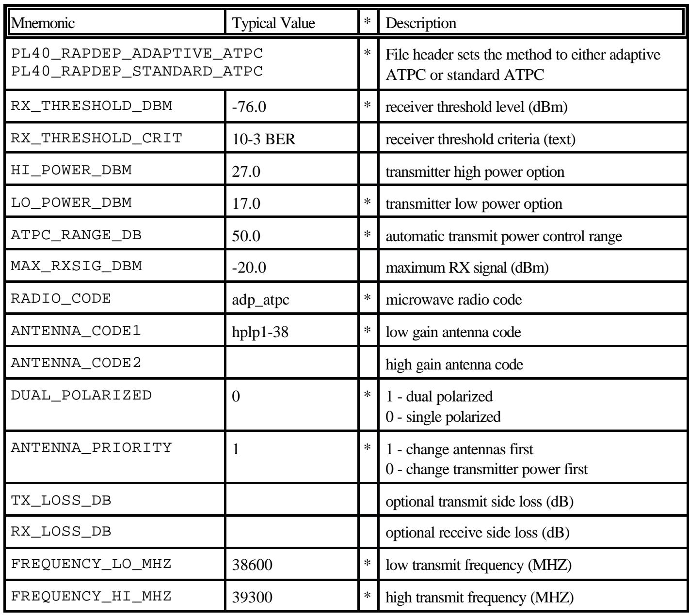
#83 textTrên các trường tùy chọn, nếu không chỉ định giá trị, thì nó sẽ được bỏ qua. Ngoài ra, sử dụng hai dấu gạch chéo // ở phía trước mã ghi nhớ để bỏ qua toàn bộ dòng. // này cũng có thể được sử dụng để thêm nhận xét vào tệp. Thông tin bổ sung về các mã ghi nhớ được đưa ra dưới đây:
#84 titleTiêu đề tệp
#85 textDòng đầu tiên trong tệp phải là PL40_RAPDEP_ADAPTIVE_ATPC hoặc
#86 textPL40_RAPDEP_STANDARD_ATPC. Cái trước chỉ định các quy tắc thiết kế cho radio sử dụng điều khiển công suất phát tự động thích ứng. Cái sau chỉ định các quy tắc thiết kế cho radio sử dụng ATPC tiêu chuẩn. Các quy trình thiết kế cho hai loại này hoàn toàn khác nhau.
#87 titleĂng-ten phân cực kép
#88 textMột số thiết kế radio sử dụng ăng-ten phân cực kép để đạt được sự cách ly giữa máy phát và máy thu. Trong những trường hợp này, phân cực dọc có nghĩa là "phát cao dọc và thu thấp ngang". Phân cực ngang có nghĩa là "phát cao ngang và thu thấp dọc". Hiệu suất là không đối xứng trên một radio phân cực kép.
#89 textHầu hết các radio là phân cực đơn và mã ghi nhớ DUAL_POLARIZED sẽ được đặt thành 0.
#90 titleTệp mưa - Phương pháp mưa - Phương pháp khả dụng - Khả dụng mưa
#91 textPhải chỉ định đường dẫn đầy đủ của tệp mưa. Ví dụ: c:\plw40\rain\crane_96\cran96_f.rai. Tệp mưa được tải và xác minh khi quy trình triển khai nhanh được bắt đầu.
#92 textPhương pháp mưa phải được chỉ định là 1 cho Crane hoặc 0 cho ITU-530 .
#93 textPhương pháp khả dụng được đặt thành 1 cho tổng hàng năm hoặc 0 cho tháng xấu nhất. Nếu sử dụng tháng xấu nhất, khả dụng mưa sẽ được chuyển đổi thành giá trị hàng năm với phương trình dưới đây:
#94 interline_equation
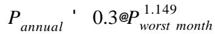
#95 titleƯu tiên ăng-ten
#96 textCài đặt này được áp dụng nếu tệp quy tắc chứa các tùy chọn công suất phát cao và thấp và mã ăng-ten có độ lợi cao và thấp. Thiết kế đường truyền bắt đầu với tùy chọn công suất thấp và mã ăng-ten có độ lợi thấp. Nếu khả dụng yêu cầu không được đáp ứng, một quy trình lặp được sử dụng để tăng độ lợi ăng-ten và công suất phát. Ưu tiên ăng-ten xác định xem ăng-ten hay công suất phát sẽ được thay đổi trước.
#97 titleDung sai gián đoạn
#98 textMột kiểm tra gián đoạn máy thu được thực hiện sau mỗi lần tính toán nhiễu như sau:
#99 textbiên độ fading phẳng = tín hiệu thu - mức ngưỡng máy thu - suy giảm ngưỡng tổng hợp Nếu biên độ fading phẳng nhỏ hơn dung sai gián đoạn được chỉ định, một sự gián đoạn được báo cáo.
#100 titleTích lũy suy giảm ngưỡng
#101 textMột tính toán nhiễu xác định suy giảm ngưỡng tổng hợp cho mỗi máy thu và xem xét tất cả các máy phát trong mạng. Nếu suy giảm ngưỡng do một máy phát gây nhiễu nhỏ hơn Tích lũy suy giảm ngưỡng được chỉ định, thì bộ gây nhiễu đó sẽ được bỏ qua. Giá trị 0,5 dB sẽ phù hợp cho hầu hết các trường hợp.
#102 titleBáo cáo suy giảm ngưỡng
#103 textCác báo cáo nhiễu hiển thị suy giảm ngưỡng tổng hợp của mỗi máy thu và liệt kê các bộ gây nhiễu cụ thể liên quan. Trong một số cấu hình mạng, một số lượng lớn các trường hợp có thể xảy ra, nếu một giá trị nhỏ của Tích lũy suy giảm ngưỡng được chỉ định. Báo cáo suy giảm ngưỡng hoạt động như một bộ lọc và sẽ chỉ báo cáo các trường hợp nhiễu bằng hoặc lớn hơn giá trị được chỉ định.
#104 titleMức thu trong không khí trong (ATPC thích ứng)
#105 textĐây là mức tín hiệu thu trong điều kiện không khí trong và không có nhiễu. Mức giảm công suất được tính toán cho mức tín hiệu thu này và đặt công suất ban đầu được sử dụng trong tính toán nhiễu.
#106 titleSuy giảm ngưỡng tới hạn (ATPC thích ứng)
#107 textKhi một máy thu gặp suy giảm ngưỡng, máy phát liên quan không phản ứng cho đến khi đạt đến suy giảm ngưỡng tới hạn. Vượt quá mức này, công suất phát sẽ tăng lên trên cơ sở dB cho dB. Ví dụ: nếu suy giảm ngưỡng máy thu tổng hợp là 6,5 dB và suy giảm ngưỡng tới hạn là 3 dB, thì mức tăng công suất sẽ là 3,5 dB.
#108 titleTiền tố ký hiệu gọi
#109 textCác tính toán nhiễu sử dụng các ký hiệu gọi duy nhất làm mã nhận dạng trạm. Chúng được tự động tạo bằng cách sử dụng số thứ tự địa điểm (ví dụ: 001, 002 ..). Nếu mã ghi nhớ CALL_SIGN_PREFIX có chứa một mục nhập, mục nhập này sẽ được sử dụng (ví dụ: ORL001, ORL002 ..).
#110 titleQUY TRÌNH
#111 titleThiết lập chế độ triển khai nhanh
#112 image
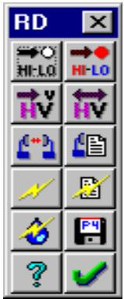
#113 textChọn Nhiễu - Triển khai nhanh trên thanh menu Mạng. Lựa chọn này bị mờ trong các điều kiện sau:
#114 textcông cụ cơ sở dữ liệu chưa được khởi tạo. Đây là vấn đề cài đặt.
#115 texttệp mạng chưa được lưu hoặc không có địa điểm nào.
#116 textChương trình cố gắng tải tệp RULES.R_D trong thư mục tệp mạng. Tệp được
#117 textxác thực bằng các tiêu chí sau:
#118 list
các tham số bắt buộc phải được chỉ định
tệp mưa phải tồn tại
mã ăng-ten phải được tìm thấy và tải
mã radio phải được tìm thấy và tải. Các thư mục cho mã ăng-ten và radio phải được đặt chính xác. (Cấu hình - Thư mục - Mã ăng-ten vi ba / Mã radio vi ba).
#119 textKhi các tham số đã được xác minh thành công, thanh công cụ triển khai nhanh được hiển thị. Để đóng chế độ triển khai nhanh, nhấp vào nút đóng thanh công cụ hoặc chọn Nhiễu - Triển khai nhanh một lần nữa.
#120 textLưu ý rằng nếu người dùng sửa đổi tệp quy tắc khi đang ở chế độ triển khai nhanh, thì cần phải đóng thanh công cụ và sau đó chọn lại triển khai nhanh để các quy tắc mới có hiệu lực.
#121 titleThiết lập kế hoạch tần số cao - thấp
#122 textMàu chú thích địa điểm được sử dụng để xác định kế hoạch tần số cao-thấp. Các màu được xác định trước bằng cách sử dụng màu đỏ cho cao và xanh lam cho thấp. Đây là quy trình hai bước. Đầu tiên, nhấp vào nút đặt lại hi-lo . Thao tác này sẽ đặt tất cả các chú thích địa điểm thành màu đen không tô. Điều này biểu thị rằng việc gán tần số chưa được thực hiện.
#123 textSau đó, nhấp vào nút đặt hi-lo . Con trỏ sẽ thay đổi để cho biết đang trong quá trình chọn hi-lo. Chọn một địa điểm tần số cao và nhấp nút chuột trái trên chú thích của nó. Thao tác này sẽ hủy chế độ chọn hi-lo. Tất cả các địa điểm được kết nối khác sẽ tự động được gán nhận dạng màu cao hoặc thấp.
#124 textNếu có một số phần độc lập trong mạng, hãy nhấp lại nút đặt hi-lo và xác định một địa điểm cao trong các phần còn lại.
#125 textVi phạm cao - thấp sẽ xảy ra trong cấu hình vòng với số lượng địa điểm lẻ. Một thông báo lỗi được đưa ra và các kết nối mạng phải được sửa đổi để tiếp tục. Một cách để xử lý điều này là chia địa điểm vi phạm thành hai địa điểm với tọa độ hơi dịch chuyển. Không thể có liên kết giữa hai địa điểm.
#126 titleThiết lập phân cực
#127 textPhân cực được xác định bằng màu đường liên kết. Màu đen biểu thị phân cực dọc và màu tím biểu thị phân cực ngang.
#128 textNếu sử dụng ăng-ten phân cực kép, màu đen biểu thị phát dọc trên tần số cao và phát ngang trên tần số thấp. Màu tím biểu thị ngược lại (phát dọc thấp và phát ngang cao.
#129 textNhấp vào nút đặt lại phân cực để đặt tất cả các liên kết thành phân cực dọc (đường màu đen)
#130 textNhấp vào nút đặt phân cực . Con trỏ sẽ thay đổi để cho biết đang trong quá trình chọn phân cực. Để chuyển đổi phân cực giữa dọc và ngang, nhấp nút chuột trái trên liên kết.
#131 textNhấp nút chuột phải ở bất kỳ đâu trên màn hình để hủy chế độ cài đặt phân cực.
#132 titleThiết kế đường truyền
#133 textNhấp vào nút thiết kế đường truyền để đặt các tham số truyền dẫn cho tất cả các liên kết trên màn hình hiển thị mạng. Bước này phải được lặp lại nếu tệp quy tắc, kết nối mạng, phân cực hoặc kế hoạch tần số hi - lo bị thay đổi. Hai bảng cơ sở dữ liệu được tạo trong bước này cho máy phát và máy thu. Chúng sẽ được sử dụng để chạy tính toán nhiễu và tạo các tệp dữ liệu pathloss riêng lẻ. Khi tính toán thiết kế hoàn tất, một nhật ký lỗi được hiển thị để tóm tắt bất kỳ sự khác biệt về hiệu suất nào. Nhật ký lỗi sử dụng Notepad tiêu chuẩn của Windows.
#134 textBiên độ fading nhiệt cần thiết để đáp ứng khả dụng mưa được tính toán đầu tiên. Trên các radio phân cực kép, cả hai hướng truyền đều được xem xét. Fading đa đường được giả định là không đáng kể.
#135 textBắt đầu với các tùy chọn công suất thấp và độ lợi ăng-ten thấp, thiết kế xác định các tùy chọn công suất và ăng-ten cần thiết để đáp ứng biên độ fading nhiệt bằng quy trình lặp. Tùy chọn ưu tiên ăng-ten xác định xem ăng-ten hay công suất phát được thay đổi trước.
#136 textCác cân nhắc cụ thể cho radio ATPC tiêu chuẩn và radio ATPC thích ứng được đưa ra dưới đây:
#137 titleRadio ATPC tiêu chuẩn
#138 textTính toán cơ bản như sau:
#139 texttín hiệu thu yêu cầu = mức ngưỡng máy thu
#140 text+ biên độ fading yêu cầu
#141 texttín hiệu thu thực tế = công suất phát
#142 list
- tổn hao TX - tổn hao RX
+ độ lợi ăng-ten
- tổn hao không gian tự do
- tổn hao hấp thụ khí quyển
#143 textMột thông báo lỗi được ghi lại nếu tín hiệu thu yêu cầu không thể đáp ứng được với các tùy chọn công suất và độ lợi ăng-ten cao nhất. Nếu tín hiệu thu thực tế lớn hơn mức tín hiệu thu tối đa trừ đi dải ATPC, một thông báo lỗi cũng được ghi lại.
#144 titleRadio ATPC thích ứng
#145 textCông suất thiết kế là công suất sẽ đáp ứng chính xác khả dụng và được tính như sau:
#146 textcông suất phát thiết kế = mức ngưỡng máy thu
#147 text+ biên độ fading nhiệt yêu cầu
#148 list
+ tổn hao TX + tổn hao RX
- độ lợi ăng-ten
+ tổn hao không gian tự do
+ tổn hao hấp thụ khí quyển
#149 textNếu công suất phát thiết kế không thể đáp ứng được với các tùy chọn ăng-ten và công suất, một thông báo lỗi sẽ được ghi lại và công suất phát sẽ được đặt thành giá trị tối đa.
#150 textMức giảm công suất để giảm tín hiệu thu xuống giá trị không khí trong sau đó được tính toán. Công suất thiết kế trừ đi mức giảm công suất là giá trị công suất ban đầu được sử dụng trong tính toán nhiễu. Nếu tổng mức giảm công suất dưới công suất tối đa lớn hơn dải ATPC, một thông báo lỗi được ghi lại.
#151 titlePhân tích nhiễu trong không khí trong
#152 image
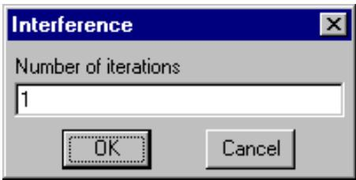
#153 textKhi thiết kế đường truyền hoàn tất, nhiễu đồng kênh có thể được tính toán. Quy trình cơ bản giống hệt như quy trình được mô tả trong phần Nhiễu của sổ tay hướng dẫn. Nhấp vào nút nhiễu không khí trong để bắt đầu tính toán. Suy giảm ngưỡng tổng hợp của mỗi máy thu được tính toán xem xét tất cả các máy phát.
#154 image
#156 textĐối với radio ATPC thích ứng, người dùng được nhắc nhập số lần lặp. Vào cuối mỗi lần chạy, công suất phát sẽ được tăng lên nếu suy giảm ngưỡng máy thu liên quan đã vượt quá giá trị tới hạn. Các lần lặp sẽ tiếp tục cho đến khi hoàn thành trừ khi không có thay đổi nào đối với bất kỳ công suất phát nào xảy ra.
#157 textCác tiêu chí sau được sử dụng để đăng ký một trường hợp nhiễu:
#158 list
tần số phát gây nhiễu phải giống với tần số thu bị ảnh hưởng (đồng kênh)
" khoảng cách giữa bộ gây nhiễu và bộ bị ảnh hưởng phải nhỏ hơn giá trị MAXDIST_KM được chỉ định trong tệp quy tắc.
suy giảm ngưỡng máy thu bị ảnh hưởng đối với một máy phát gây nhiễu duy nhất phải lớn hơn giá trị được chỉ định bởi ACCUMULATE_THRDEG_DB trong tệp quy tắc.
#159 textBáo cáo được tự động hiển thị khi hoàn tất tính toán. Để quay lại báo cáo, nhấp vào nút báo cáo . Một báo cáo mẫu được hiển thị bên dưới.
#160 textNhiễu - Điều kiện không khí trong (rapdep_s.gr4)
#161 table
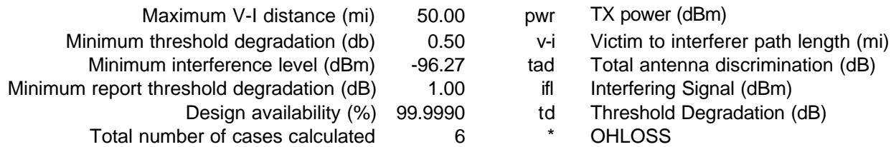
#162 textTrường hợp 1 sd02 (a = 266.9° sd05), VHPX4-220A, 23600V, td = 6.95
#167 textv-i = 5.8, tad = 50.1 (i -48.6° v 0.0°), ifl = -80.1 (-16.2), td = 7.83
#168 textDòng đầu tiên của mỗi trường hợp cung cấp thông tin chi tiết về máy thu bị ảnh hưởng. Góc phương vị và máy phát tọa độ được hiển thị trong ngoặc đơn. Dòng cũng bao gồm mô hình ăng-ten, tần số, phân cực và suy giảm ngưỡng tổng hợp.
#169 textCác máy phát gây nhiễu được liệt kê bên dưới máy thu bằng hai dòng cho mỗi máy. Dòng đầu tiên đưa ra góc phương vị và máy thu tọa độ trong ngoặc đơn, tiếp theo là mô hình ăng-ten, tần số, phân cực và công suất phát. Công suất phát được định dạng như sau:
#170 titleRadio ATPC thích ứng
#171 list
a) công suất thiết kế trừ đi mức giảm công suất
b) công suất tối đa
c) giá trị công suất được sử dụng trong lần lặp cuối cùng của tính toán nhiễu. Nếu giá trị này giống với (a), thì máy thu liên quan của nó không vượt quá suy giảm ngưỡng tới hạn của nó.
#172 titleRadio ATPC tiêu chuẩn
#173 list
a) công suất thiết kế trừ đi dải ATPC
b) công suất tối đa
#174 textDòng thứ hai liệt kê các tham số sau:
#175 list
chiều dài đường truyền từ bộ bị ảnh hưởng đến bộ gây nhiễu
tổng độ phân biệt ăng-ten với các góc phân biệt bộ gây nhiễu và bộ bị ảnh hưởng trong ngoặc đơn
mức gây nhiễu với sự khác biệt giữa mục tiêu và mức gây nhiễu trong ngoặc đơn
suy giảm ngưỡng máy thu do máy phát này gây ra
dấu * biểu thị rằng đường truyền gây nhiễu có thể bị chặn và là ứng cử viên cho tính toán OHLOSS
#176 textMột báo cáo gián đoạn máy thu theo sau bản tóm tắt suy giảm ngưỡng. Nếu biên độ fading phẳng nhỏ hơn dung sai gián đoạn, một sự gián đoạn được báo cáo.
#177 image
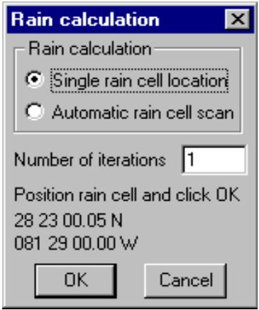
#178 titleNhiễu trong điều kiện mưa
#179 textNhấp vào nút nhiễu - mưa để bắt đầu tính toán.
#180 textĐối với radio ATPC thích ứng, hộp thoại tính toán mưa bao gồm số lần lặp để chạy. Lưu ý rằng tính toán gián đoạn cho radio ATPC thích ứng là vô nghĩa trừ khi một số lần lặp được chỉ định. Điều này là cần thiết để cho phép tăng công suất phát nhằm khắc phục nhiễu.
#181 textTính toán có thể được thực hiện cho một vị trí ô mưa cố định hoặc quét ô mưa tự động
#182 texttrên mạng.
#183 titleVị trí ô mưa đơn
#184 textChọn tùy chọn vị trí ô mưa đơn. Định vị ô mưa trên mạng bằng cách giữ nút chuột trái trên màn hình hiển thị mạng và di chuyển ô mưa đến vị trí mong muốn. Nhấp OK để chạy tính toán. Một báo cáo mẫu được hiển thị bên dưới:
#185 table
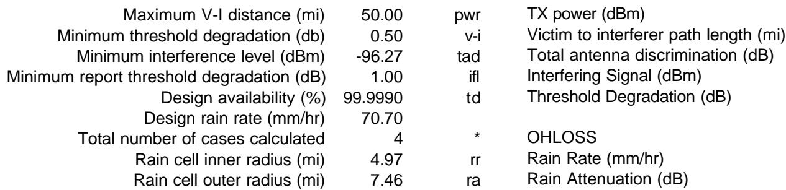
#186 textDòng đầu tiên của mỗi trường hợp cung cấp thông tin chi tiết về máy thu bị ảnh hưởng. Góc phương vị và máy phát tọa độ được hiển thị trong ngoặc đơn. Dòng cũng bao gồm mô hình ăng-ten, tần số, phân cực và suy giảm ngưỡng tổng hợp.
#187 textCác máy phát gây nhiễu được liệt kê bên dưới máy thu trên hai dòng cho mỗi máy. Dòng đầu tiên đưa ra góc phương vị và máy thu tọa độ trong ngoặc đơn, tiếp theo là mô hình ăng-ten, tần số, phân cực và công suất phát. Cường độ mưa và suy hao mưa trên đường hoạt động của máy phát gây nhiễu cũng được đưa ra. Suy hao mưa được tính toán bằng cách sử dụng phân cực của máy phát. Công suất phát được định dạng như sau:
#188 titleRadio ATPC thích ứng
#189 list
a) công suất thiết kế trừ đi mức giảm công suất cộng với suy hao mưa. Nếu giá trị này vượt quá công suất tối đa, thì công suất tối đa được sử dụng.
b) công suất tối đa
c) giá trị công suất được sử dụng trong lần lặp cuối cùng của tính toán nhiễu. Nếu giá trị này giống với (a), thì máy thu liên quan của nó không vượt quá suy giảm ngưỡng tới hạn của nó.
#190 titleRadio ATPC tiêu chuẩn
#191 list
a) công suất thiết kế trừ đi dải ATPC cộng với suy hao mưa. Nếu giá trị này vượt quá công suất tối đa, thì công suất tối đa được sử dụng.
b) công suất tối đa
#192 textDòng thứ hai liệt kê các tham số sau:
#193 list
l chiều dài đường truyền từ bộ bị ảnh hưởng đến bộ gây nhiễu
tổng độ phân biệt ăng-ten với các góc phân biệt bộ gây nhiễu và bộ bị ảnh hưởng trong ngoặc đơn
#194 list
cường độ mưa và suy hao mưa trên đường truyền gây nhiễu. Lưu ý rằng suy hao mưa luôn được tính toán bằng cách sử dụng phân cực tròn trên các đường truyền gây nhiễu.
mức gây nhiễu với sự khác biệt giữa mục tiêu và mức gây nhiễu trong ngoặc đơn
suy giảm ngưỡng máy thu do máy phát này gây ra
" dấu * biểu thị rằng đường truyền gây nhiễu có thể bị chặn và là ứng cử viên cho tính toán OHLOSS
Báo cáo gián đoạn máy thu theo sau bản tóm tắt suy giảm ngưỡng.
#195 textBáo cáo gián đoạn máy thu (dung sai gián đoạn = 2.0 dB)
#197 textMột sự gián đoạn được báo cáo khi biên độ fading phẳng nhỏ hơn dung sai gián đoạn được xác định trong tệp quy tắc. Biên độ fading phẳng được tính từ các số hạng sau.
#198 code
biên độ fading phẳng (ffm = -0.3) = công suất phát (pwr = 27.0) - tổn hao đường truyền thực (npl = 49.0) - suy hao mưa (ra = 49.5) - mức ngưỡng máy thu (-76 dBm được xác định trong tệp quy tắc) - suy giảm ngưỡng (td = 4.8)
#199 titleQuét ô mưa tự động
#200 textChọn tùy chọn quét ô mưa tự động và nhấp OK. Ô mưa bắt đầu ở góc tây bắc của màn hình hiển thị mạng và di chuyển từ tây sang đông với mức tăng được chỉ định trong tệp quy tắc.
#201 textÔ mưa phải cắt ít nhất một liên kết vô tuyến để tính toán.
#202 textTại mỗi vị trí, một tính toán nhiễu / gián đoạn được thực hiện. Nhiễu và gián đoạn tồi tệ nhất được báo cáo cùng với vị trí của ô mưa cho các điều kiện đó. Một báo cáo mẫu được hiển thị bên dưới:
#203 textNhiễu - Quét ô mưa tự động (rapdep_s.gr4)
#204 code
Khoảng cách V-I tối đa (mi) 50.00 pwr Công suất TX (dBm) Suy giảm ngưỡng tối thiểu (db) 0.50 v-i Chiều dài đường truyền từ bộ bị ảnh hưởng đến bộ gây nhiễu (mi) Mức nhiễu tối thiểu (dBm) -96.27 tad Tổng độ phân biệt ăng-ten (dB) Suy giảm ngưỡng báo cáo tối thiểu (dB) 1.00 ifl Tín hiệu gây nhiễu (dBm) Khả dụng thiết kế (%) 99.9990 td Suy giảm ngưỡng (dB) Cường độ mưa thiết kế (mm/hr) 70.70 Tổng số trường hợp được tính toán 16 * OHLOSS Bán kính trong ô mưa (mi) 4.97 rr Cường độ mưa (mm/hr) Bán kính ngoài ô mưa (mi) 7.46 ra Suy hao mưa (dB) Mức tăng quét ô mưa (mi) 3.11
#205 code
Trường hợp 1 sd01 (a = 228.4° sd02), VHPX4-220A, 22600V, td = 2.15 Số lần phơi nhiễm 2 Vị trí ô mưa 34 22 30.83 N - 118 45 00.00 W Trường hợp 2 sd08 (a = 244.3° sd01), VHPX2-220A, 23600V, td = 1.06 Số lần phơi nhiễm 1 Vị trí ô mưa 34 20 00.74 N - 118 45 00.00 W
#206 textDòng máy thu bị ảnh hưởng giống hệt nhau trong tất cả các báo cáo. Suy giảm ngưỡng là giá trị tồi tệ nhất được tính toán trong
#207 textquét ô mưa. Dòng thứ hai đưa ra số lần phơi nhiễm và vị trí của ô mưa.
#208 textBáo cáo gián đoạn máy thu (dung sai gián đoạn = 2.0 dB)
#212 textVị trí ô mưa 34 15 00.53 N 118 41 59.47 W
#213 textĐịnh dạng báo cáo gián đoạn giống hệt với tính toán ô mưa đơn với việc bổ sung vị trí ô mưa. Trường hợp gián đoạn tồi tệ nhất là giá trị biên độ fading phẳng tối thiểu. Lưu ý rằng trường hợp gián đoạn tồi tệ nhất không nhất thiết tương ứng với suy giảm ngưỡng tồi tệ nhất.
#214 titleĐịnh nghĩa ô mưa
#215 textMột ô mưa được định nghĩa là hai vòng tròn đồng tâm trong tệp quy tắc. Cường độ mưa trong vòng tròn bên trong là không đổi ở giá trị được xác định từ khả dụng mưa. Cường độ mưa ở vòng tròn bên ngoài bằng 0 và thay đổi tuyến tính đến giá trị tối đa ở bán kính vòng tròn bên trong. Cường độ mưa của một đường truyền cắt ô mưa được tính là tích phân đường trên chiều dài của đường truyền (L).
#216 interline_equation
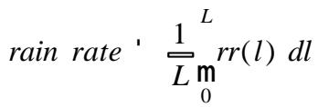
#217 titlePhân cực đường truyền gây nhiễu
#218 textNói chung, phân cực của tín hiệu không nằm trên hướng chính của ăng-ten là không xác định được. Suy hao mưa của tất cả các đường truyền gây nhiễu được tính toán bằng cách sử dụng phân cực tròn. Các hệ số hồi quy cho phân cực tròn được tính toán theo ITU-R P.838-1
#219 interline_equation
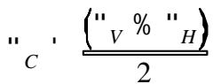
#220 interline_equation
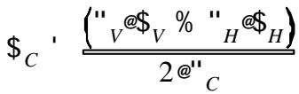
#221 titleTạo tệp dữ liệu Pathloss
#222 textNhấp vào nút để tạo các tệp dữ liệu pathloss cho màn hình hiển thị mạng. Các tệp này sẽ được lưu trong thư mục dự án. Các tham số được lấy từ tệp quy tắc và các giá trị được tính toán trong bước thiết kế đường truyền.
#223 textQuy ước đặt tên tệp dựa trên các ký hiệu gọi. Mạng được cập nhật với các tên tệp này và các mô-đun thiết kế riêng lẻ có thể được truy cập bằng cách nhấp vào liên kết liên quan trên màn hình hiển thị mạng.
#224 titleBáo cáo thiết kế đường truyền
#225 image
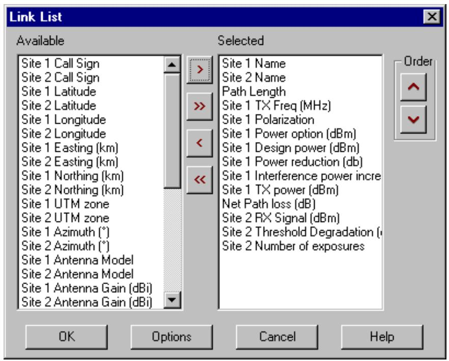
#226 textNhấp vào nút để hiển thị báo cáo thiết kế đường truyền. Định dạng báo cáo có thể cấu hình bởi người dùng và đầu ra được ghi vào một tệp được phân tách bằng dấu phẩy (CSV), sau đó có thể được mở bằng chương trình bảng tính như Excel. Một danh sách lựa chọn được trình bày đầu tiên cho người dùng. Lưu ý rằng lựa chọn sẽ bị ảnh hưởng bởi cài đặt tùy chọn một hoặc hai dòng trên mỗi liên kết.
#227 textChọn các mục từ hộp danh sách có sẵn và chuyển chúng sang hộp danh sách Đã chọn bằng nút mũi tên đơn > Nút mũi tên kép chuyển tất cả các mục có sẵn.
#228 textĐể trả lại các mục trong hộp danh sách đã chọn về danh sách có sẵn, hãy chọn các mục và sử dụng các nút và . Thứ tự của các mục đã chọn được thiết lập bằng các nút và .
#229 image
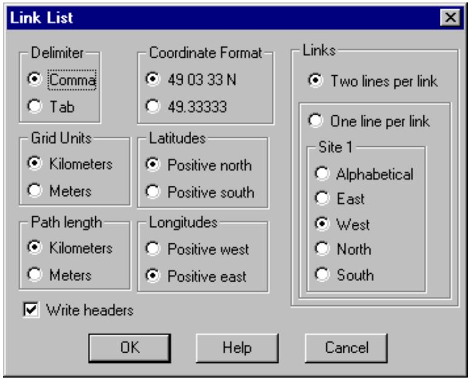
#230 titleTùy chọn báo cáo
#231 textNhấp vào nút Tùy chọn để đặt các tùy chọn định dạng cho báo cáo.
#232 textBáo cáo có thể được ghi dưới dạng một hoặc hai dòng trên mỗi liên kết. Nếu sử dụng tùy chọn một dòng trên mỗi liên kết, thì người dùng phải xác định một tiêu chí để xác định địa điểm nào trong hai địa điểm sẽ là địa điểm 1 (địa điểm đầu tiên).
#233 textCó thể sử dụng dấu phẩy hoặc tab làm dấu phân cách trường. Nếu một bảng tính như Excel sẽ được sử dụng để hiển thị báo cáo, nên sử dụng dấu phẩy.
#234 textChiều dài đường truyền sẽ tính bằng dặm hoặc kilômét theo cài đặt đơn vị đo lường chung. Nếu chọn chiều dài đường truyền tính bằng mét, thì chiều dài đường truyền sẽ được ghi bằng feet hoặc mét.
#235 textKhi các lựa chọn và tùy chọn hoàn tất, nhấp OK để hiển thị báo cáo. Để sắp xếp báo cáo, nhấp vào tiêu đề cột của trường được sử dụng làm tiêu chí sắp xếp. Lần nhấp đầu tiên sắp xếp dữ liệu theo thứ tự tăng dần. Lần nhấp thứ hai sắp xếp theo thứ tự giảm dần.
#236 table
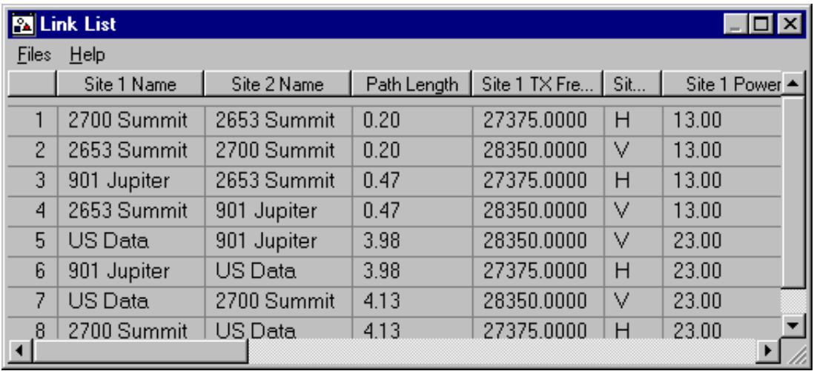
#237 textChọn Tệp - Lưu để lưu báo cáo.
#238 titleVÍ DỤ TRIỂN KHAI NHANH
#239 textĐĩa CD-ROM chứa các ví dụ triển khai nhanh cho radio ATPC tiêu chuẩn và ATPC thích ứng. Các ví dụ không thể chạy trực tiếp từ CD-ROM vì cần có quyền đọc và ghi. Quy trình sẽ tạo các bảng cơ sở dữ liệu trong thư mục này.
#240 textCác tệp ví dụ ATPC thích ứng nằm trên CD-ROM trong thư mục Examples\Rap_depl\Adp_atpc. Các tệp sau được bao gồm:
#242 textCác tệp ví dụ ATPC tiêu chuẩn nằm trên CD-ROM trong thư mục Examples\Rap_depl\Std_atpc. Các tệp sau được bao gồm:
#243 code
rapdep_s.gr4 Tệp dữ liệu mạng Pathloss a3958.mas mã ăng-ten độ lợi thấp ví dụ (định dạng nhị phân) a3959.mas mã ăng-ten độ lợi cao ví dụ (định dạng nhị phân) std_atpc.mrs mã radio ví dụ (định dạng nhị phân) std_atpc.raf mã radio ví dụ (định dạng ASCII) rules.r_d tệp quy tắc triển khai nhanh
#244 textTạo một thư mục mới trên ổ cứng của bạn cho một trong các ví dụ trên và sao chép các tệp vào thư mục đó. Có một số hạn chế về tên thư mục. Đường dẫn đầy đủ của thư mục không được chứa dấu cách hoặc ký tự quốc tế. Ngoài ra, không thể sử dụng thư mục windows "My Documents". Những hạn chế này là do BDE (công cụ cơ sở dữ liệu Borland).
#245 textKhi điều này hoàn tất, chương trình Pathloss phải được thông báo nơi tìm các tệp radio và ăng-ten. Chọn Cấu hình - Thư mục - Mã ăng-ten vi ba và trỏ đến thư mục ví dụ. Lặp lại điều này cho Mã radio vi ba.
#246 textTải tệp mạng ví dụ. Chọn Mô-đun - Mạng.
#247 titleTệp ví dụ ATPC tiêu chuẩn
#248 textĐây là một loạt các liên kết 23 GHz nằm trong một khu vực khô cằn.
#249 chart
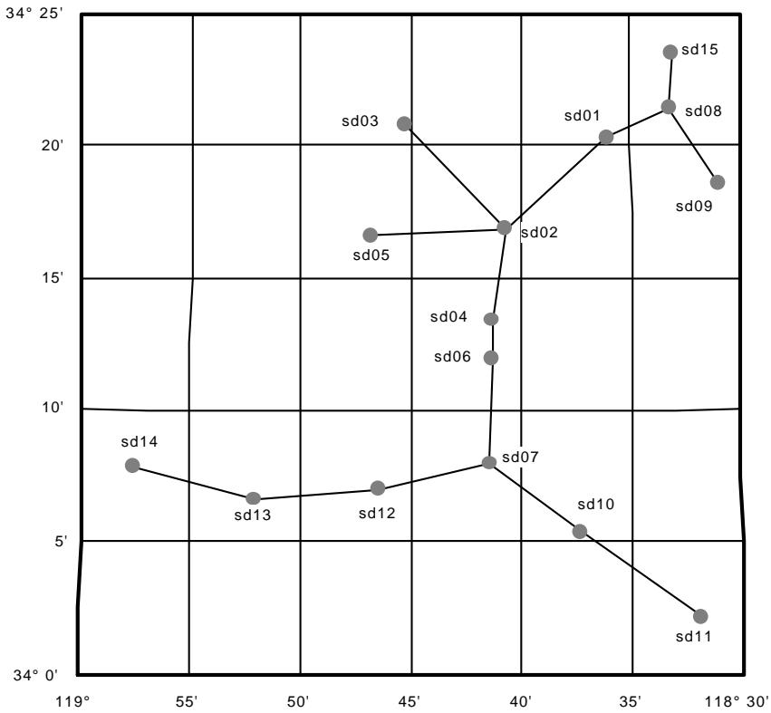
#250 textBắt đầu với bản vẽ mạng này, các đường truyền sẽ được thiết kế và phân tích nhiễu.
#251 textSau đó, một mô phỏng mưa sẽ được thực hiện bằng cách di chuyển một ô mưa trên mạng. Tại mỗi điểm, nhiễu sẽ được tính toán lại để xác định xem có bất kỳ sự gián đoạn nào xảy ra hay không.
#252 textCơ sở của thiết kế và phân tích là tệp quy tắc "rules.r_d". Tệp văn bản ASCII được sử dụng trong ví dụ này được liệt kê dưới đây:
#253 code
PL40_RAPDEP_STANDARD_ATPC // biểu thị tệp quy tắc ATPC tiêu chuẩn
RX_THRESHOLD_DBM -76.0 // mức ngưỡng máy thu (dBm) RX_THRESHOLD_CRIT 10^-3 // tiêu chí ngưỡng máy thu (văn bản)
HI_POWER_DBM 27.0 // tùy chọn công suất cao máy phát
LO_POWER_DBM 17.0 // tùy chọn công suất thấp máy phát
ATPC_RANGE_DB 10.0 // dải điều khiển công suất TX tự động
MAX_RXSIG_DBM -20.0 // tín hiệu RX tối đa (dBm) RADIO_CODE
STD_ATPC // mã radio
ANTENNA_CODE1 A3958 // mã ăng-ten độ lợi thấp
ANTENNA_CODE2 A3959 // mã ăng-ten độ lợi cao
DUAL_POLARIZED 0 // 1-phân cực kép, 0-phân cực đơn,
ANTENNA_PRIORITY 1 // 1-thay đổi ăng-ten trước, 0-thay đổi công suất trước
TX_LOSS_DB // tổn hao phía phát
RX_LOSS_DB // tổn hao phía thu
FREQUENCY_HI_MHZ 23600 // tần số phát cao (MHZ)
FREQUENCY_LO_MHZ 22600 // tần số phát thấp (MHZ)
CHANNELID_HI 1AH // mã nhận dạng kênh cao
CHANNELID_LO 1AL // mã nhận dạng kênh thấp RAIN_FILE C:\plw40\Rain\Crane_96\Crane96_F.rai // đường dẫn đầy đủ
RAIN_METHOD 1 // 1-Crane, 0-ITU 530
AVAILABILITY_METHOD 1 // 1-hàng năm, 0-tháng xấu nhất
RAIN_AVAILABILITY 99.999 // khả dụng (hàng năm hoặc tháng xấu nhất)
RNCELL_INRADIUS_KM 8.0 // bán kính trong ô mưa (km)
RNCELL_OUTRADIUS_KM 12.0 // bán kính ngoài ô mưa (km)
RNCELL_XYINC_KM 5.0 // mức tăng quét ô mưa (km)
RELIABILITY_METHOD 1 // 1-Vigants, 0-ITU 530-7
#254 code
C_FACTOR 3.0 // Hệ số C - chỉ Vigants
GEOCLIM_FACTOR 2.5E-06 // yếu tố địa khí hậu - chỉ ITU 530-7
ACCUMULATE_THRDEG_DB 0.5 // suy giảm ngưỡng tích lũy tối thiểu (dB)
REPORT_THRDEG_DB 1.0 // suy giảm ngưỡng báo cáo tối thiểu
GENERATE_PROFILES 1 // 1-tạo, 0-không tạo
DIST_INC_M 50.0 // mức tăng khoảng cách hồ sơ (mét)
OUTAGE_TOLERANCE_DB 2.0 // biên độ fading phẳng < dung sai gián đoạn = gián đoạn
MAXDIST_KM 50.0 // khoảng cách V-I tối đa (km)
CALL_SIGN_PREFIX SD // tiền tố ký hiệu gọi
#255 textĐịnh dạng tệp sử dụng một loạt các mã ghi nhớ mô tả theo sau là giá trị được phân tách bằng một hoặc nhiều dấu cách. Hai dấu gạch chéo "//" được sử dụng để chú thích các dòng. Tham khảo tài liệu Triển khai nhanh để biết chi tiết đầy đủ về định dạng tệp.
#256 textLưu ý rằng mã ghi nhớ RAIN_FILE yêu cầu đường dẫn đầy đủ của tệp mưa. Ví dụ giả định rằng chương trình đã được cài đặt trong thư mục mặc định. Nếu bất kỳ thư mục nào khác đã được sử dụng, bạn sẽ phải chỉnh sửa tệp quy tắc.
#257 image
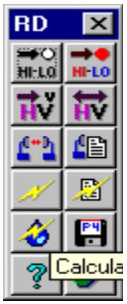
#258 textChọn Nhiễu - Triển khai nhanh để hiển thị thanh công cụ. Tất cả các thao tác sẽ sử dụng các nút trên thanh công cụ này.
#259 textThiết lập kế hoạch tần số cao thấp
#260 textMàu chú thích địa điểm xác định các địa điểm tần số cao và thấp bằng cách sử dụng màu đỏ cho tần số cao và màu xanh lam cho tần số thấp. Đây là quy trình hai bước. Đầu tiên, nhấp vào nút đặt lại hi-lo . Thao tác này sẽ đặt tất cả các chú thích địa điểm thành kiểu màu đen không tô.
#261 textSau đó, nhấp vào nút đặt hi-lo . Con trỏ sẽ thay đổi để cho biết đang trong quá trình chọn hi-lo.
#262 textChọn một địa điểm được chỉ định là cao và nhấp nút chuột trái trên chú thích địa điểm này. Thao tác này sẽ hủy chế độ chọn hi-lo. Tất cả các địa điểm được kết nối khác sẽ tự động được gán nhận dạng màu cao hoặc thấp. Việc lựa chọn địa điểm cao là không quan trọng trong ví dụ này.
#263 titleThiết lập phân cực
#264 textPhân cực được biểu thị bằng màu của các đường liên kết bằng cách sử dụng màu đen cho phân cực dọc và màu tím cho phân cực ngang. Nhấp vào nút đặt lại phân cực để đặt tất cả các liên kết thành phân cực dọc. Trong ví dụ này, các phân cực sẽ được thay đổi sau khi phân tích nhiễu.
#265 titleThiết kế đường truyền
#266 textNhấp vào nút thiết kế đường truyền để đặt các tham số truyền dẫn cho tất cả các liên kết trên màn hình hiển thị mạng. Bước này thực hiện các thao tác sau:
#267 textGán các ký hiệu gọi tùy ý cho tất cả các địa điểm. Điều này là cần thiết cho tính toán nhiễu.
#268 list
Tính toán biên độ fading nhiệt cần thiết cho đường truyền dựa trên khả dụng, tệp mưa và phương pháp được chỉ định trong tệp quy tắc.
n Bắt đầu với tùy chọn công suất thấp và ăng-ten độ lợi thấp, tính toán biên độ fading nhiệt. Nếu cần, một quy trình lặp được sử dụng để tăng công suất phát và độ lợi ăng-ten cho đến khi đáp ứng được biên độ fading nhiệt yêu cầu. Nếu tùy chọn "ưu tiên ăng-ten" được đặt, thì ăng-ten sẽ được thay đổi trước khi tăng công suất phát. Nếu không thể đáp ứng biên độ fading nhiệt yêu cầu, một thông báo lỗi được ghi lại.
Nếu tín hiệu thu trừ đi dải ATPC lớn hơn tín hiệu thu tối đa trong tệp quy tắc, một thông báo lỗi cũng sẽ được ghi lại.
#269 textsd02 - sd03
#270 textKhả dụng < 99.9990
#271 textChiều dài đường truyền = 10.15 km
#272 textsd10 - sd11
#273 textKhả dụng < 99.9990
#274 textHai vấn đề thiết kế được xác định. Ví dụ không cố gắng khắc phục những vấn đề này.
#275 titlePhân tích nhiễu trong không khí trong
#276 textNhiễu đồng kênh được phân tích sau khi thiết kế đường truyền. Nhấp vào nút nhiễu không khí trong Báo cáo được
#277 texttự động hiển thị khi hoàn tất. Có 6 trường hợp nhiễu tạo ra suy giảm ngưỡng từ 2 đến 12 dB.
#278 textTình hình có thể được cải thiện bằng cách thay đổi phân cực trên đường truyền sd02 đến sd05. Nhấp vào nút đặt phân cực . Con trỏ sẽ thay đổi để cho biết một thao tác cài đặt phân cực đang được tiến hành. Nhấp nút chuột trái trên liên kết sd02 đến sd05 để thay đổi phân cực của nó. Để tắt chế độ cài đặt phân cực này, nhấp nút chuột phải ở bất kỳ đâu trên màn hình.
#279 textĐể đăng ký thay đổi này, bạn phải lặp lại bước thiết kế đường truyền. Nhấp vào nút trước và sau đó lặp lại các tính toán nhiễu. Hai trường hợp còn lại từ 1 đến 3 dB vẫn còn.
#280 textMỗi báo cáo nhiễu bao gồm một báo cáo gián đoạn; tuy nhiên, trong điều kiện không khí trong, khó có khả năng xảy ra gián đoạn.
#281 titleNhiễu trong điều kiện mưa
#282 image
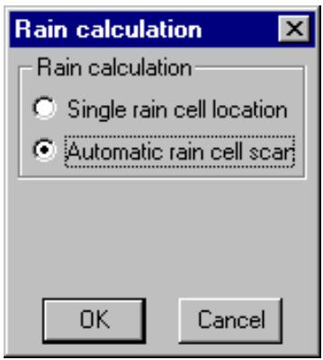
#283 textBài kiểm tra thực sự về hiệu suất mạng tần số cao là hoạt động dưới một ô mưa mô phỏng. Nhấp vào nút nhiễu - mưa để hiển thị hộp thoại tính toán mưa. Phân tích có thể được thực hiện cho một ô mưa đơn tại một vị trí do người dùng đặt hoặc quét tự động trên mạng.
#284 textĐể định vị ô mưa, giữ nút chuột trái trên màn hình hiển thị mạng và kéo ô mưa đến vị trí mong muốn. Chế độ hoạt động này hữu ích để phân tích một tình huống cụ thể; tuy nhiên, một bài kiểm tra có ý nghĩa hơn có thể được thực hiện với quét ô mưa tự động. Đặt tùy chọn này và nhấp vào nút OK.
#285 textTại mỗi vị trí ô mưa, một tính toán nhiễu hoàn chỉnh được thực hiện. Ô mưa phải cắt ít nhất một đường truyền để tính toán. Chỉ suy giảm ngưỡng và gián đoạn trong trường hợp xấu nhất cho mỗi máy thu được báo cáo.
#286 textKết quả gián đoạn cho thấy các chặng sd10 đến sd11 và sd02 đến sd03 sẽ gặp gián đoạn. Lưu ý rằng các đường truyền này đã được xác định là vấn đề trong giai đoạn thiết kế đường truyền. Ba đường truyền khác cho thấy gián đoạn ở mức cận biên. Một sự gián đoạn được báo cáo khi biên độ fading phẳng nhỏ hơn dung sai gián đoạn được chỉ định trong các tệp quy tắc.
#287 titleTạo tệp dữ liệu Pathloss
#288 textNhấp vào nút P để tạo các tệp dữ liệu pathloss cho màn hình hiển thị mạng. Các tệp này sẽ được lưu trong thư mục ví dụ. Dữ liệu tệp sẽ sử dụng các giá trị được tính toán trong bước thiết kế đường truyền.
#289 textQuy ước đặt tên tệp dựa trên các ký hiệu gọi. Mạng được cập nhật với các tên tệp này. Các mô-đun thiết kế riêng lẻ có thể được truy cập bằng cách nhấp vào liên kết liên quan trên màn hình hiển thị mạng.
#290 titleTệp ví dụ ATPC thích ứng
#291 textVí dụ này sử dụng hai vòng 38 GHz tại một trạm cổng chung nằm trong khu vực có lượng mưa lớn.
#292 chart
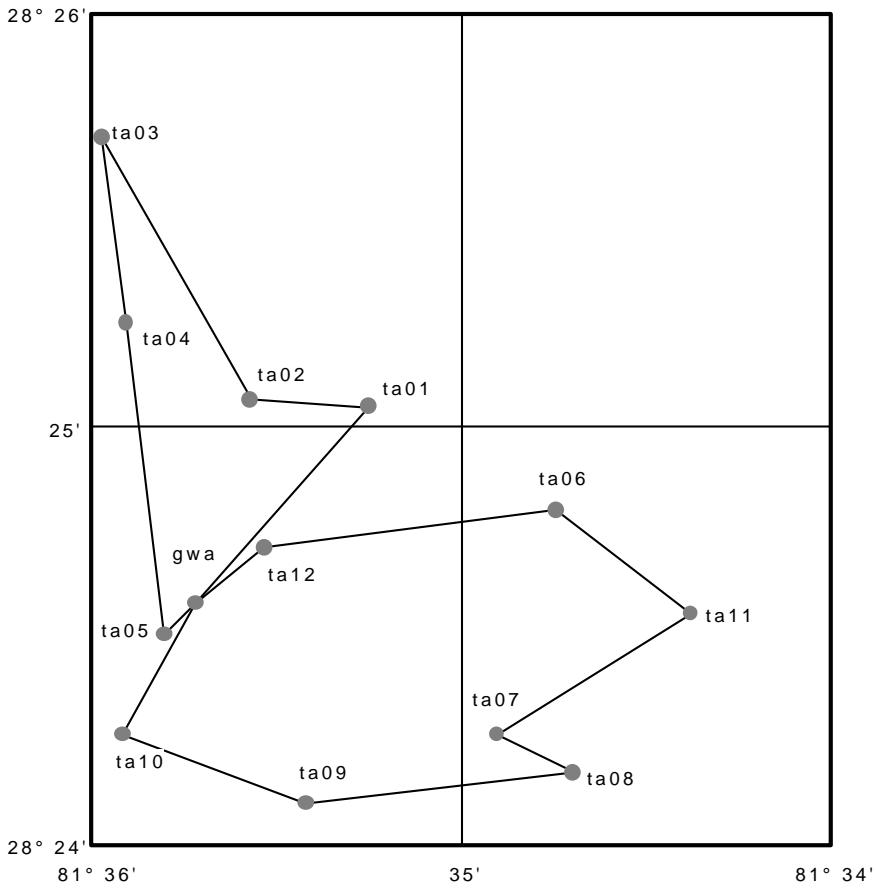
#293 textBắt đầu với bản vẽ mạng này, các đường truyền sẽ được thiết kế và phân tích nhiễu, gián đoạn trong điều kiện không khí trong và mưa cũng như độ ổn định của mạng.
#294 textĐộ ổn định của mạng là một cân nhắc quan trọng với radio ATPC thích ứng. Các radio này hoạt động gần ngưỡng và bộ điều khiển công suất phát sẽ phản ứng để khắc phục sự suy giảm ngưỡng. Điều này có thể dẫn đến tình huống mất kiểm soát.
#295 textCơ sở của thiết kế và phân tích là tệp quy tắc "rules.r_d". Tệp văn bản ASCII được sử dụng trong ví dụ này được liệt kê dưới đây:
#296 table
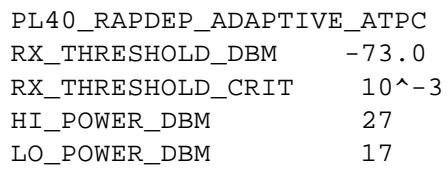
#297 table
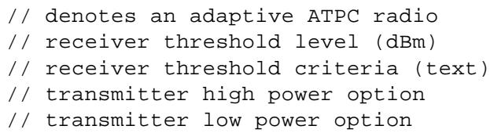
#298 code
ATPC_RANGE_DB 50. // dải điều khiển công suất TX tự động RADIO_CODE
ADP_ATPC // mã radio
ANTENNA_CODE1 HPLP1-38 // mã ăng-ten
DUAL_POLARIZED 1 // 1-phân cực kép, 0-phân cực đơn,
ANTENNA_PRIORITY 0 // 1-thay đổi ăng-ten trước, 0-thay đổi công suất trước
TX_LOSS_DB // tổn hao phía phát
RX_LOSS_DB // tổn hao phía thu
FREQUENCY_HI_MHZ 39300 // tần số phát cao (MHZ)
FREQUENCY_LO_MHZ 38600 // tần số phát thấp (MHZ)
CHANNELID_HI 1AH // mã nhận dạng kênh cao (văn bản)
CHANNELID_LO 1AL // mã nhận dạng kênh thấp (văn bản) RAIN_FILE C:\Plw40\Rain\Crane_96\Cran96d3.rai // đường dẫn đầy đủ
RAIN_METHOD 1 // 1-Crane, 0-ITU 530
AVAILABILITY_METHOD 1 // 1-hàng năm, 0-tháng xấu nhất
RAIN_AVAILABILITY 99.999 // khả dụng (hàng năm hoặc tháng xấu nhất)
RNCELL_INRADIUS_KM 1.0 // bán kính trong ô mưa (km)
RNCELL_OUTRADIUS_KM 1.5 // bán kính ngoài ô mưa (km)
RNCELL_XYINC_KM 0.5 // mức tăng quét ô mưa (km)
RELIABILITY_METHOD 1 // 1-Vigants, 0-ITU 530-7
C_FACTOR 6. // Hệ số C - chỉ Vigants
GEOCLIM_FACTOR 2.5E-06 // yếu tố địa khí hậu - chỉ ITU 530-7
ACCUMULATE_THRDEG_DB 0.1 // suy giảm ngưỡng tích lũy tối thiểu (dB)
REPORT_THRDEG_DB // suy giảm ngưỡng báo cáo tối thiểu
GENERATE_PROFILES 0 // 1-tạo, 0-không tạo
DIST_INC_M 25. // mức tăng khoảng cách hồ sơ (mét)
OUTAGE_TOLERANCE_DB 1.0 // biên độ fading phẳng < dung sai gián đoạn = gián đoạn
MAXDIST_KM 50. // khoảng cách V-I tối đa (km)
CALL_SIGN_PREFIX OR // tiền tố ký hiệu gọi
CLRAIR_RXLEVEL_DBM -69.0 // mức thu không khí trong (chỉ ATPC thích ứng)
CRITICAL_THRDEG_DB 2.0 // ngưỡng tới hạn (chỉ ATPC thích ứng)
#299 textĐịnh dạng tệp sử dụng một loạt các mã ghi nhớ mô tả theo sau là giá trị, được phân tách bằng một hoặc nhiều dấu cách. Hai dấu gạch chéo "//" được sử dụng để chú thích các dòng. Tham khảo tài liệu Triển khai nhanh để biết chi tiết đầy đủ về định dạng tệp.
#300 textLưu ý rằng mã ghi nhớ RAIN_FILE yêu cầu đường dẫn đầy đủ của tệp mưa. Ví dụ giả định rằng chương trình đã được cài đặt trong thư mục mặc định. Nếu bất kỳ thư mục nào khác đã được sử dụng, bạn sẽ phải chỉnh sửa tệp quy tắc.
#301 image
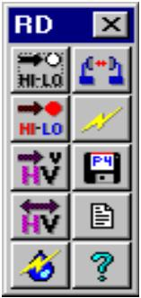
#302 textChọn Nhiễu - Triển khai nhanh để hiển thị thanh công cụ. Tất cả các thao tác sẽ sử dụng các nút trên thanh công cụ này.
#303 textThiết lập kế hoạch tần số cao thấp
#304 textMàu chú thích địa điểm được sử dụng để xác định các địa điểm tần số cao và thấp bằng cách sử dụng màu đỏ cho tần số cao và màu xanh lam cho tần số thấp. Đây là quy trình hai bước. Đầu tiên, nhấp vào nút đặt lại hi-lo . Thao tác này sẽ đặt tất cả các chú thích địa điểm thành kiểu màu đen không tô.
#305 textSau đó, nhấp vào nút đặt hi-lo . Con trỏ sẽ thay đổi để cho biết một thao tác chọn hi-lo đang được tiến hành.
#306 textChọn một địa điểm được chỉ định là cao và nhấp nút chuột trái trên chú thích địa điểm này. Thao tác này sẽ hủy chế độ chọn hi-lo. Tất cả các địa điểm được kết nối khác sẽ tự động được gán nhận dạng màu cao hoặc thấp. Việc lựa chọn địa điểm cao là không quan trọng trong ví dụ này.
#307 titleThiết lập phân cực
#308 textVí dụ này sử dụng ăng-ten phân cực kép. Quy ước sau được sử dụng:
#309 list
dọc có nghĩa là phát dọc trên tần số cao và phát ngang trên tần số thấp
" ngang có nghĩa là phát ngang trên tần số cao và phát dọc trên tần số thấp Phân cực được biểu thị bằng màu của các đường liên kết bằng cách sử dụng màu đen cho phân cực dọc và màu tím cho phân cực ngang. Nhấp vào nút đặt lại phân cực để đặt tất cả các liên kết thành phân cực dọc. Trong ví dụ này, tất cả các phân cực sẽ được giữ nguyên ở cài đặt này.
#310 titleThiết kế đường truyền
#311 textNhấp vào nút thiết kế đường truyền để đặt các tham số truyền dẫn cho tất cả các liên kết trên màn hình hiển thị mạng. Bước này thực hiện các thao tác sau:
#312 list
Gán các ký hiệu gọi tùy ý cho tất cả các địa điểm. Điều này là cần thiết cho tính toán nhiễu.
n Tính toán biên độ fading nhiệt cần thiết cho đường truyền dựa trên tệp mưa, phương pháp và khả dụng được chỉ định trong tệp quy tắc. Lưu ý rằng trên một hệ thống phân cực kép, hiệu suất là không đối xứng và phân tích phải được thực hiện theo cả hai hướng.
Công suất phát sẽ được đặt ở giá trị chính xác cần thiết để đáp ứng biên độ fading nhiệt. Vì chỉ có một ăng-ten được chỉ định trong tệp quy tắc, ưu tiên sẽ được dành cho tùy chọn công suất thấp. Nếu biên độ fading không thể đáp ứng được, một thông báo lỗi sẽ được ghi lại.
Chương trình sau đó xác định mức giảm công suất cần thiết để đặt tín hiệu thu về giá trị không khí trong được chỉ định trong tệp quy tắc (-69 dBm trong ví dụ này).
" Nếu tổng mức giảm công suất từ mức công suất tối đa lớn hơn dải ATPC, một thông báo lỗi cũng sẽ được ghi lại.
#313 textKhông có vấn đề thiết kế đường truyền nào trong ví dụ.
#314 titlePhân tích nhiễu trong không khí trong
#315 image
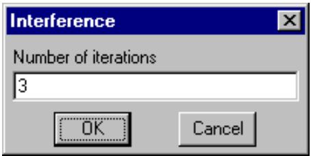
#316 textKhi thiết kế đường truyền hoàn tất, nhiễu đồng kênh có thể được phân tích. Nhấp vào nút nhiễu không khí trong Một số lần lặp của tính toán nhiễu là cần thiết cho các hệ thống radio ATPC thích ứng. Vào cuối mỗi lần chạy, ngưỡng tổng hợp của mỗi máy thu được kiểm tra để xem liệu suy giảm ngưỡng tới hạn có bị vượt quá hay không. Nếu có, công suất máy phát liên quan sẽ được tăng lên. Các lần lặp kết thúc nếu không có thay đổi nào đối với công suất phát và hệ thống được coi là ổn định.
#318 textTám trường hợp nhiễu trong khoảng 0,1 đến 3,5 dB được báo cáo. Chúng có thể được loại bỏ hiệu quả bằng cách thay đổi phân cực sang ngang trên các đường truyền ngắn từ gwa đến ta05 và đến ta12. Nhấp vào nút đặt phân cực . Con trỏ sẽ thay đổi để cho biết một thao tác cài đặt phân cực đang được tiến hành. Nhấp nút chuột trái trên liên kết gwa - ta05 và trên liên kết gwa - ta12 để thay đổi phân cực của chúng. Để tắt chế độ cài đặt phân cực này, nhấp nút chuột phải ở bất kỳ đâu trên màn hình.
#320 image
#321 textĐể đăng ký thay đổi này, bạn phải lặp lại bước thiết kế đường truyền. Nhấp vào nút thiết kế đường truyền trước và sau đó lặp lại các tính toán nhiễu. Hai trường hợp còn lại nhỏ hơn 1 dB vẫn còn.
#322 textMỗi báo cáo nhiễu bao gồm một báo cáo gián đoạn; tuy nhiên, trong điều kiện không khí trong, khó có khả năng xảy ra gián đoạn.
#323 titleNhiễu trong điều kiện mưa
#324 image
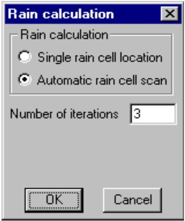
#325 textBài kiểm tra thực sự về hiệu suất mạng tần số cao là hoạt động dưới một ô mưa mô phỏng. Nhấp vào nút nhiễu - mưa để hiển thị hộp thoại tính toán mưa. Phân tích có thể được thực hiện cho một ô mưa đơn tại một vị trí do người dùng đặt hoặc quét tự động trên mạng. Tính toán gián đoạn là vô nghĩa đối với radio ATPC thích ứng nếu chỉ sử dụng một lần lặp. Cần nhiều lần lặp để tăng công suất phát và kiểm tra độ ổn định.
#326 textĐể định vị ô mưa, giữ nút chuột trái trên màn hình hiển thị mạng và kéo ô mưa đến vị trí mong muốn. Chế độ hoạt động này hữu ích để phân tích một tình huống cụ thể; tuy nhiên, một bài kiểm tra có ý nghĩa hơn có thể được thực hiện với quét ô mưa tự động. Đặt tùy chọn này và nhấp vào nút OK.
#327 textTại mỗi vị trí ô mưa, một tính toán nhiễu hoàn chỉnh được thực hiện. Ô mưa phải cắt ít nhất một đường truyền để tính toán. Chỉ suy giảm ngưỡng và gián đoạn trong trường hợp xấu nhất cho mỗi máy thu được báo cáo.
#328 textMặc dù suy giảm ngưỡng đáng kể (lên đến 15 dB) xảy ra, nhưng không có gián đoạn nào trong bất kỳ điều kiện nào.
#329 titleTạo tệp dữ liệu Pathloss
#330 textNhấp vào nút Tạo tệp PL4 E để tạo các tệp dữ liệu pathloss cho màn hình hiển thị mạng. Các tệp này sẽ được lưu trong thư mục ví dụ. Dữ liệu tệp sẽ sử dụng các giá trị được tính toán trong bước thiết kế đường truyền.
#331 textQuy ước đặt tên tệp dựa trên các ký hiệu gọi. Mạng được cập nhật với các tên tệp này và các mô-đun thiết kế riêng lẻ có thể được truy cập bằng cách nhấp vào liên kết liên quan trong màn hình hiển thị mạng.